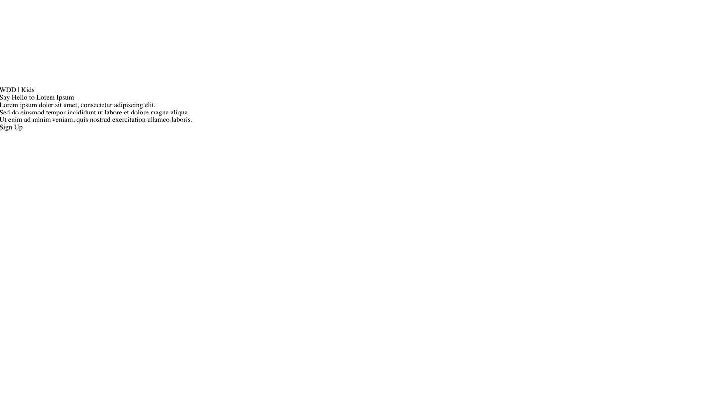
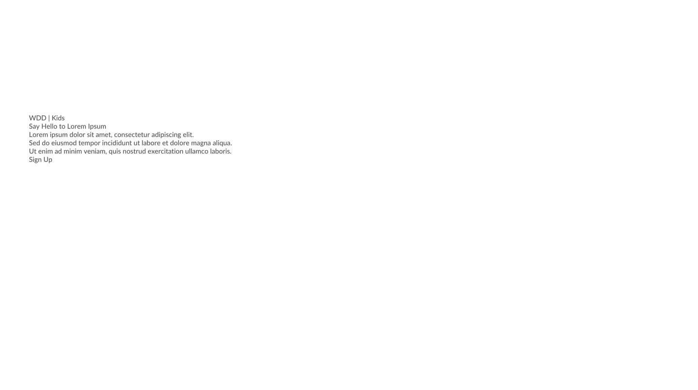
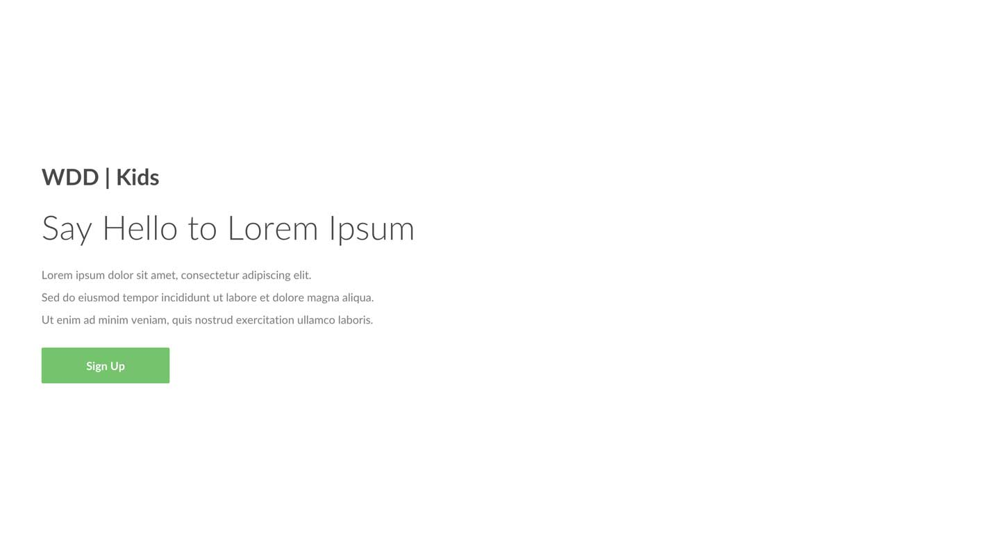
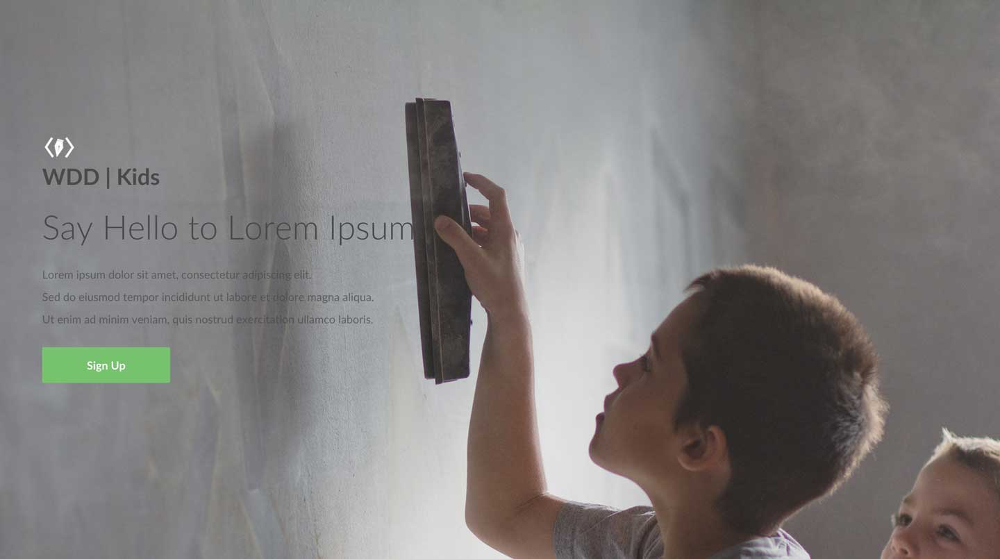
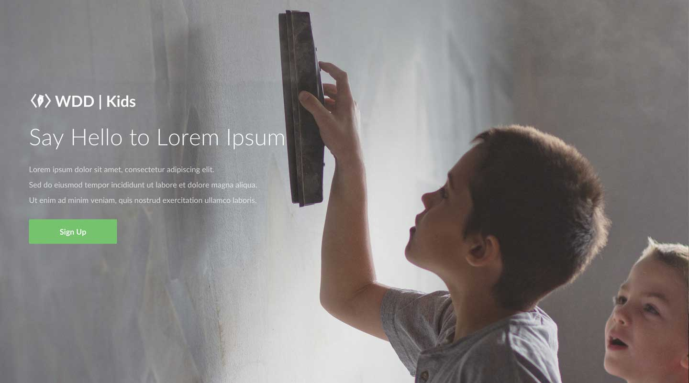
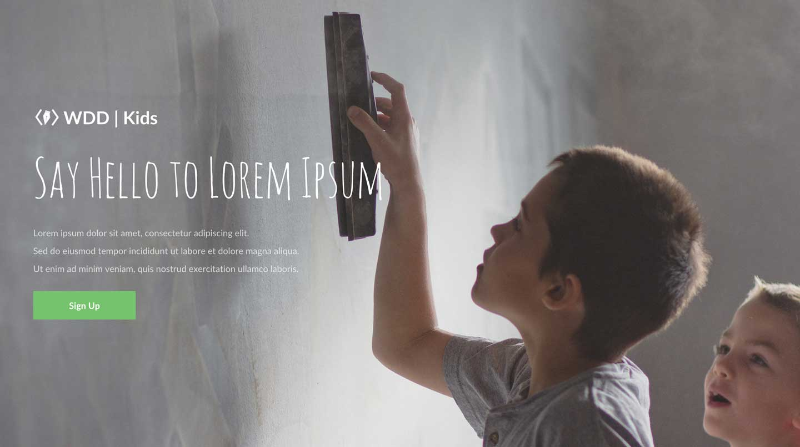

In today's hands-on, we will be creating our very own landing page. In its most basic sense, a landing page is any page that a webpage visitor arrives at or "lands on" when he or she first visits a website. Although there are many different kinds of landing pages, they share a unified purpose, and that is to grab the user's attention towards a particular cause or action. Take a look at some of examples of good landing pages:
The key to crafting a successful landing page is to capture the user's attention by appealing to the user's emotion. Some times, design is more than just organizing the information in an optimal way. It's about moving the user's emotions, and typography & images play a pivotal role in this.
Let's get started. Make sure you make all the changes in the right files (i.e not to the files in the instructions folder)! Ask a TA for help.
Your page should look something like this:

Google Fonts is an excellent free resource to use if you're interested in importing new fonts to replace the ugly, standard fonts such as Times New Roman. For this hands-on, we want to import a font called Lato. To do so:
- Search "Lato" in the top left search bar.
- Click on the "Quick-use" button in the bottom right corner of the Lato font
- Select the 300, 400, 500, 600, 700 font weights
- Copy and paste the provided code into the head tag of index.html
At this point, you have successfully imported the Lato font to your HTML. However, we are not actually using the new font in our CSS. Let's make the following changes to our #container div so that we are using the Lato font, and to give it some inner spacing so that it's not touching the edge of the screen:
- For #container div, apply the following CSS attributes - font-family: 'Lato'; padding: 60px; color: #4a4a4a;

Right now, all of the information in our web site is in a same order of hierarchy because it's all in same size, same weight, and same font. Let's make some adjustments to the typography before we go any further. Some times, a few adjustments in font-size and font-weight is enough to make the website beautiful.
- For #heading div, apply the following CSS attributes - font-size: 48px; font-weight: 300; margin: 24px 0px;
- For #description div, apply the following CSS attributes - font-size: 16px; line-height: 2; opacity: 0.72; margin-bottom: 24px;
- For #title-caption div, apply the following CSS attributes - font-size: 32px; font-weight: 700;
- For #action div, apply the following CSS attributes - background: #78c272; color: white; padding: 16px 64px; border-radius: 2px; display: inline-block; font-size: 16px; font-weight: 700;

As you apply the CSS attributes, try to have experiments on your own on the CSS values so that you understand how each of them work!
So far, you can take this same design, just replace the text, and can call it any website and it will still work. That is, the design is not specific to our topic of WDD | Kids. How can we make this website feel more like it's catered for kids' education? To do this, we will use an image that resembles kids' education and that strikes to the user's emotion.
First, uncomment #background div, which is the code on top of #container div. The #background div contains the image that we will use.
After this step, your page should look like this:

You will see that there are a couple of things that are off: 1. Background extends outside of the page, making the page scrollable. 2. The logo and the title is misaligned. 3. The color of the text is black and the image is quite dark, making the text hard to see.
Let's fix these one by one:
-
For #background div, apply the following CSS attributes - display: block; width: 100%; height: 100%; overflow: hidden;
This makes the background contained within the page's width and height. -
For #title-logo div, apply the following CSS attribute - float: left;
For #title-caption div, apply the following CSS attribute - float: left;
You will learn about CSS floats in depth in next week's programming lecture. It is used frequently to horizontally align elements. -
For #container div, apply the following CSS attribute - color: white;
This makes the color of every text within #container div white, establishing a greater contrast between the text and the background image.
Your page should now look like this:

The landing page is starting to come together! Now, for the finishing touch, let's maximize our emotional appeal by using a unique font for the title. We want to make the title look as if it was handwritten by the kids. As such, find a font called "Amatic SC" from Google Font and add it to the HTML. (Refer to the very beginning if you are having trouble! It should be a very similar workflow.) Then, we are going to use this font with some adjustments in the font-size (It's because Amatic SC font is by default, quite small. We need to make it bigger to have it as the same size as Lato in 48px.):
- For #heading div, apply the following CSS attribute - font-family: 'Amatic SC'; font-size: 96px;
Your landing page is done! It should look like this:

If you have time, try to experiment more with different fonts and images. For example, what do you think of the design when you...
- Make the text center justified?
- Get rid of the WDD | Kids Title?
- Change the font to a different one (Try "Crafty Girls")